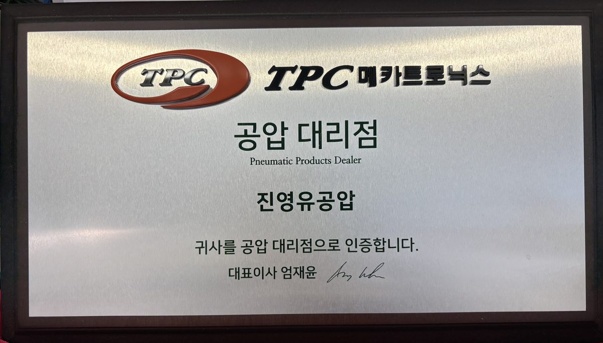

익산 · 공압·유압 부품 공급 · TPC 공식 대리점
공장 설비에 들어가는 공압·유압 부품을 찾아서 납품하는 회사입니다. 형번만 알려 주시면 재고·호환품·대체품까지 확인해 견적을 드립니다. 전북 공장은 직접 납품합니다.

스토어·카탈로그에 없는 형번, 단종품, 대체품도 찾아드립니다.
형번이나 명판 사진을 문자·이메일로 보내 주세요. 당일 회신을 원칙으로 합니다.
063-842-2650
이메일 jjyy6625@hanmail.net · 네이버 톡톡(스마트스토어 jinyoung2650)네. 사업자 거래는 세금계산서를 발행하고, 월 정산도 가능합니다.
네. 형번이나 명판 사진을 보내 주시면 호환품·대체품을 찾아 견적을 드립니다. 이것이 저희가 가장 자주 하는 일입니다.
TPC·SMC 재고품은 당일 또는 익일 출고, 주문 생산품은 메이커 납기에 따릅니다. 견적 시 납기를 함께 적어 드립니다.
전북(익산·전주·군산·김제·완주) 공장은 직접 납품하고, 그 외 지역은 택배로 보냅니다.
네. 익산 평동로 592 매장에서 평일 08:30~18:00, 토요일 08:30~12:00에 수령하실 수 있습니다. 전화로 재고를 먼저 확인해 주세요.
네. 전날 전화로 말씀해 주시면 오전 07:30부터 열어 드립니다. 급한 설비 보전 건에 자주 쓰는 방법입니다.
공장 설비·자동화 라인을 운영하는 제조업체, 설비 보전 담당자, 기계 제작업체가 주 고객입니다. 특정 거래처명은 공개하지 않습니다.
부품 공급·수배·납품 (개인사업자). 대표 양인숙. 전북특별자치도 익산시 평동로 592 (평화동)
호스 어셈블리·판넬·유닛 조립 생산 (법인). 대표 김오곤. 전북특별자치도 익산시 춘포로 75 (금강동). 사업자번호 403-81-36953
전북특별자치도 익산시 평동로 592 (평화동). 익산 산업단지 인근 평동로 변. 방문 전 전화로 재고를 확인해 주세요.